A screen-by-screen comparison and feature inventory across the three apps, framed for product positioning of the GTF Adventist spiritual formation experience.
| Feature | YouVersion | Life Bible | GTF |
|---|---|---|---|
| Bible reader (multi-translation)2,500+ vs ~50 vs curated SDA-friendly set | Y · 2,500+ versions | Y · 50+ (premium tiers) | Y · curated |
| Audio Bible | Y | Y | Y · TTS + ElevenLabs |
| Verse of the Day (home) | Y · large image card | Y · "VERSE" tab | Y · daily verse |
| Reading Plans | Y · 40,000+ | Y · curated + Book Club | Y · 21 plans + custom |
| Devotional plans | Y · social + plans | Y · "DEVO" tab | Y · 21 with EGW |
| Topic-based Q&A | P · Search | Y · TouchPoints (500 topics) | P · roadmap |
| AI verse search / questions | — | Y · "How do I…" search | Y · OpenAI integration |
| Highlights / Notes / Bookmarks | Y | Y | Y |
| Cross-references in reader | Y · tappable | Y · linked chapters | Y · verse map |
| Strong's / original languages | P · select versions | Y · premium | Y · Strong's verse map |
| Commentaries | — | Y · Matthew Henry, Believer's, Life App | P · EGW / SDA Bible Commentary |
| Study Bibles | — | Y · MacArthur, ESV Study (paid) | — |
| Ellen G. White writings | — | — | Y · egwwritings.org integration |
| Sabbath School lessons | — | — | Y · Adventech sync, weekly |
| Sabbath-aware UI / mode | — | — | Y · auto Sabbath theme |
| Church directory | Y · Add Your Church | — | Y · 96k+ churches, hierarchy |
| Friends / Social feed | Y · Community tab | — | — (intentional) |
| Prayer list | Y · Guided Prayer | Y · personal + group | Y · prayer journal |
| Streaks / badges / gamification | Y · streaks + 6+ badges | Y · streak flame | Y · spiritual rings |
| Kids content | Y · separate Bible App for Kids | — | Y · in-app Kids Sabbath School |
| Giving / donations | Y · Give Now | — | — |
| Events / church bulletins | Y | — | — |
| Videos (Bible Project, etc.) | Y | — | Y · cinematic AI videos |
| Premium / paid tier | — (free) | Y · Premium subscription | P · "Pro" upgrade flow |
| Offline mode | Y | Y · premium | P · partial |
| Doctrinal alignment guard | — | — | Y · "Aligned with SDA Beliefs" |
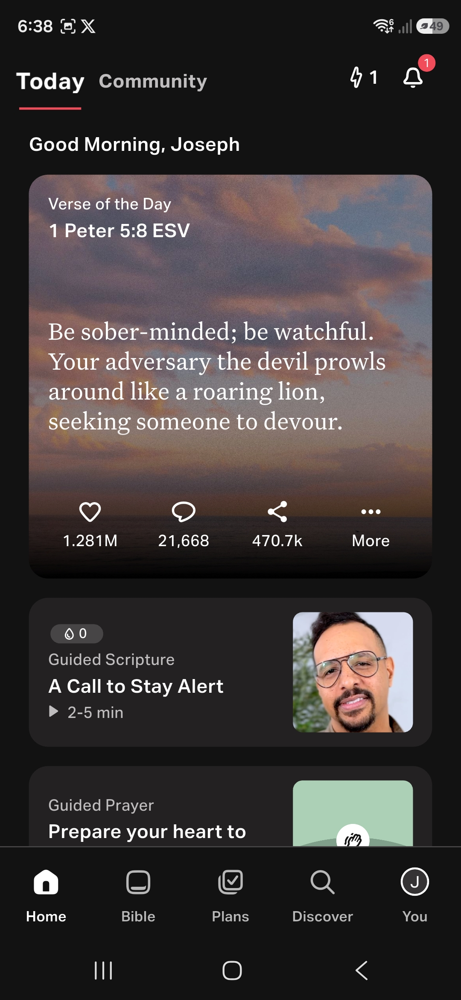
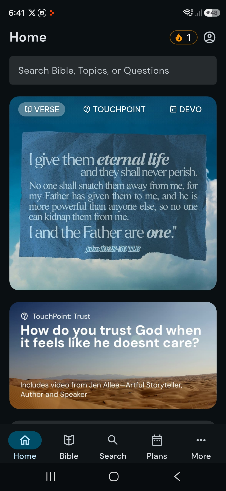
YouVersion leads with social proof, Life Bible leads with search/topics, GTF leads with this week's Sabbath School lesson + EGW reflection — a denominationally distinct opening hook neither competitor offers.
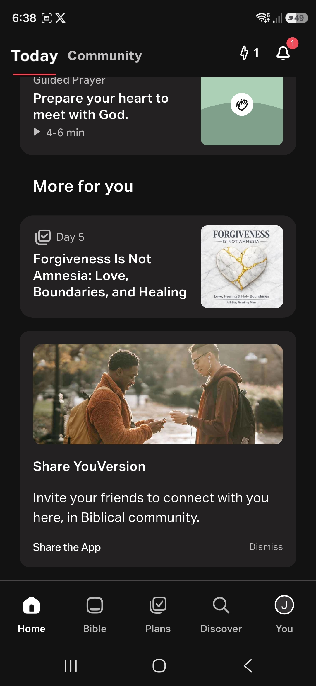
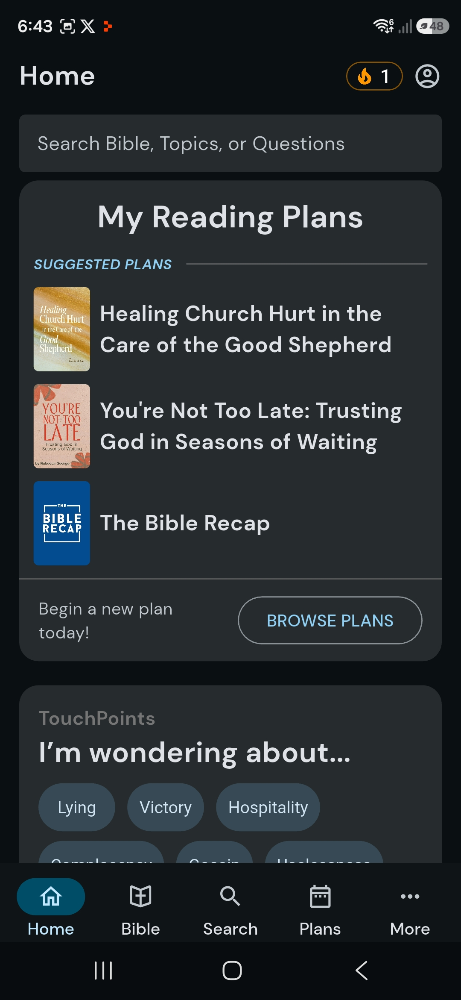
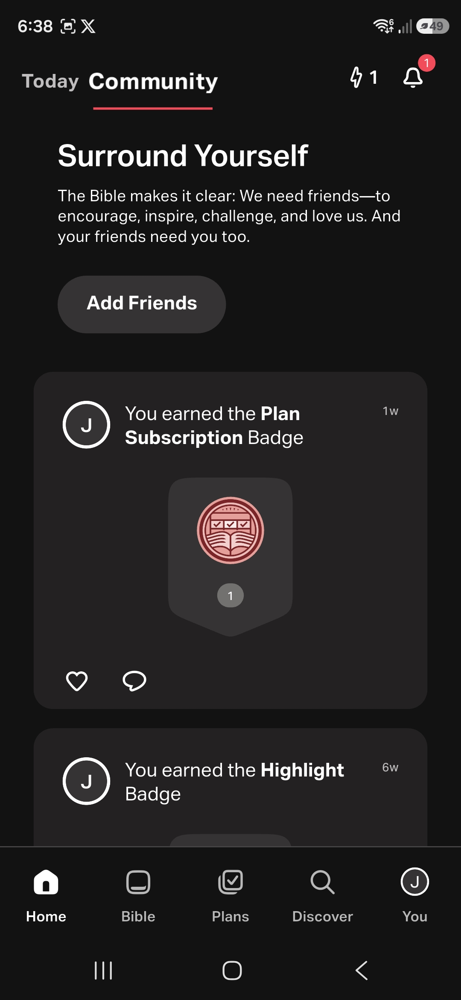
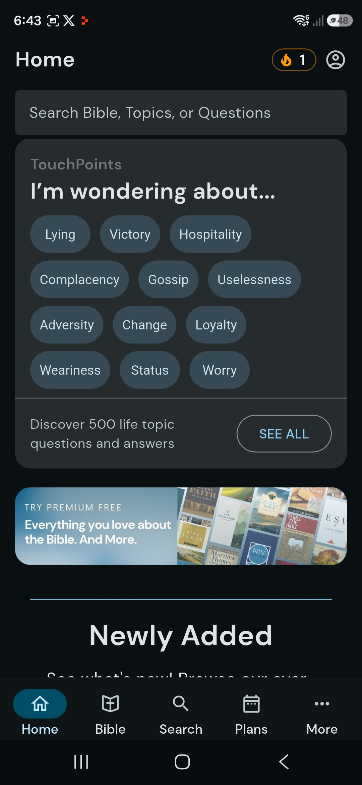
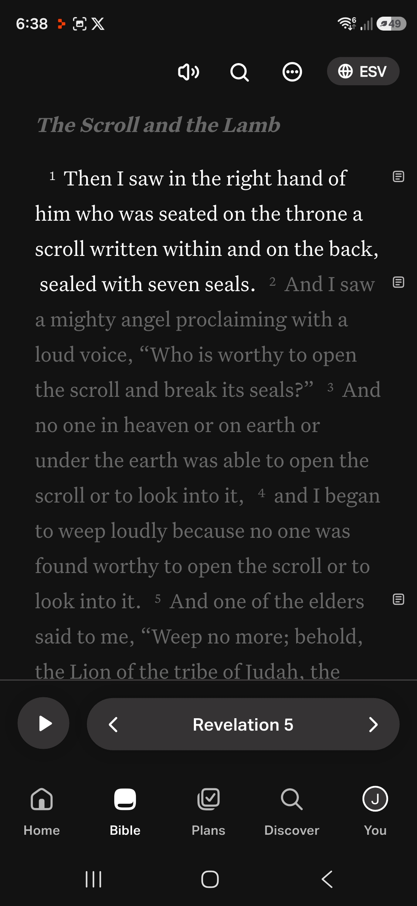
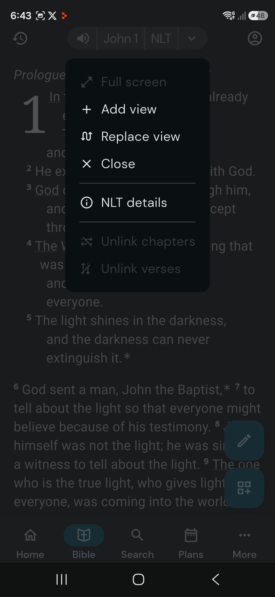
Add a parallel translation pane (Life-Bible-style) and tappable cross-reference popovers (YV-style) to make the reader feel competitive with the dominant apps.
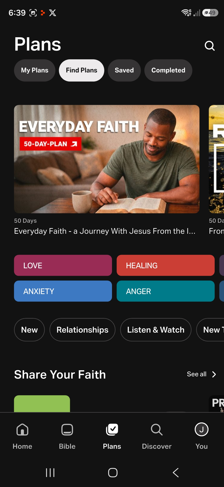
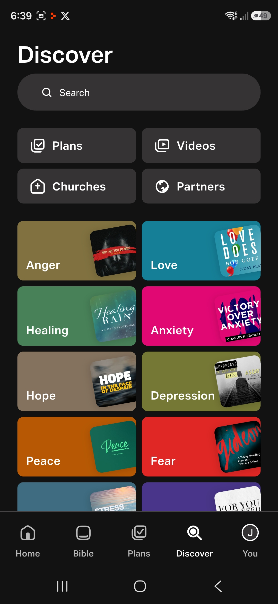
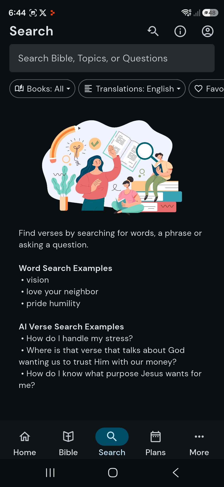
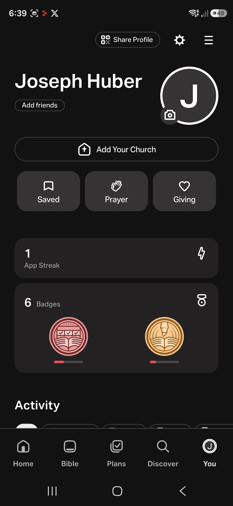
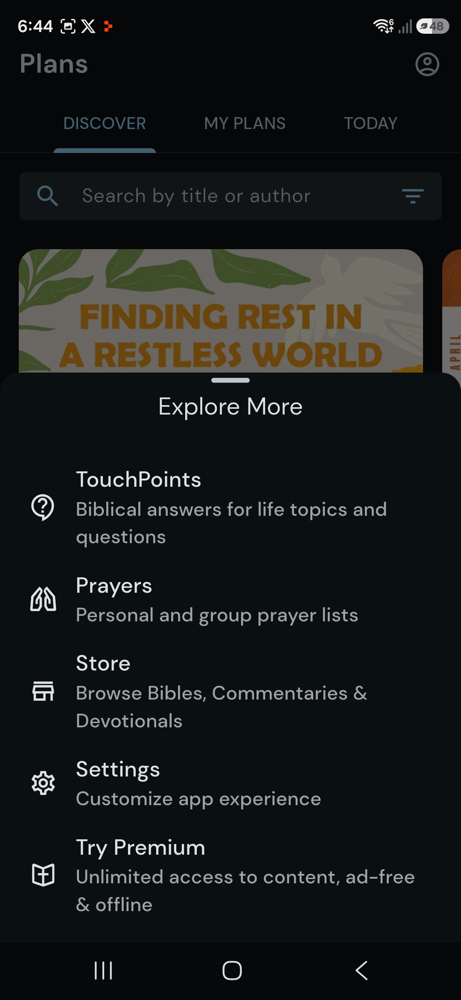
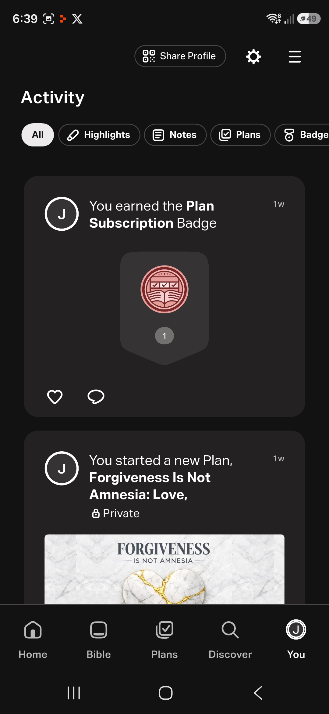
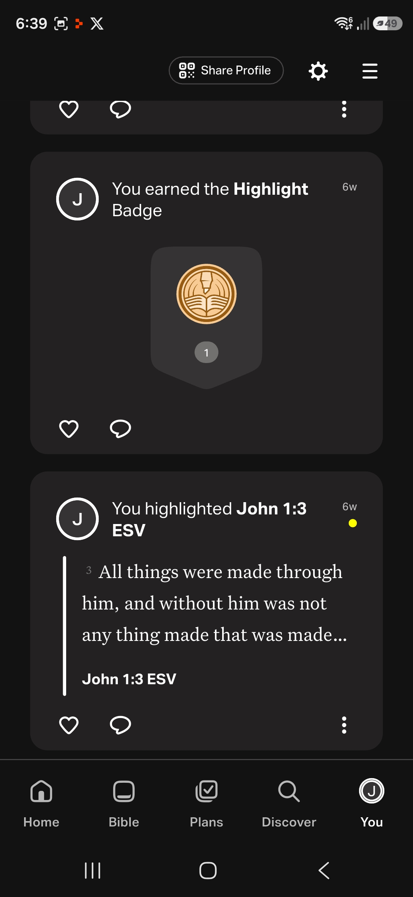
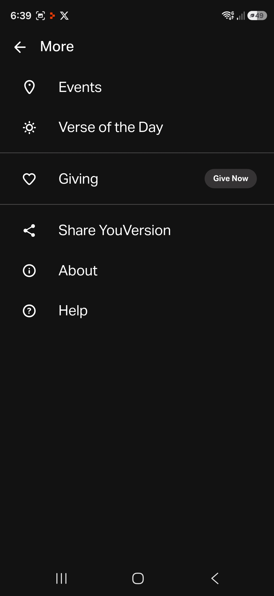
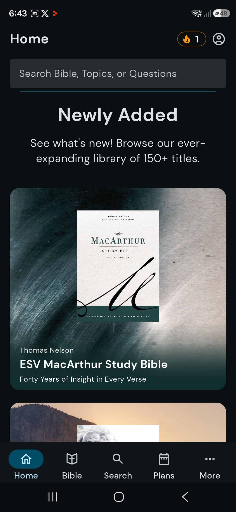
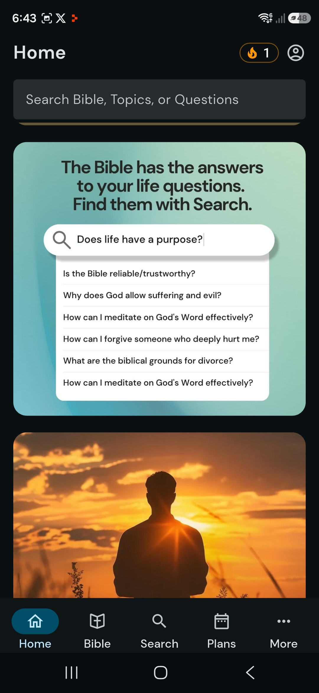
Don't try to out-feature YouVersion's social or Life Bible's commentary store. Double down on the Adventist moat (Sabbath School, EGW, doctrinal guard, church hierarchy) and selectively port the two killer competitor patterns: (1) Life Bible's AI search prompt UX grounded in EGW/SDA-BC, and (2) YouVersion's tappable cross-references in the reader.